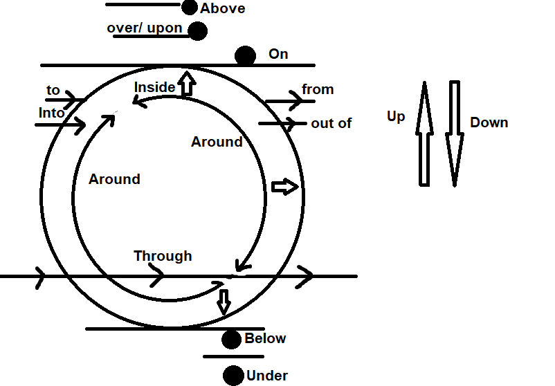

Appropriate Prepositions
Click on the picture in order to have Full view
Above(উপরে)
- অতিমাত্রায় উপরে বোঝাতে Above বসে। যেমন-
= The Sky is above our head. - Level বা abstract এর উপরে অথবা List এর উপাদানের মধ্যে উপরে বোঝালে Above বসবে। যেমন-
- Humanity is above everything. (Abstract)
- The hill track is 900 feet above from the sea level. (Level)
- The word "above" is above the word "list". (List)
Over(উপরে)
- কোন ব্যাক্তি বা বস্তুর উপরিভাগ বোঝাতে Over বসে। যেমন-
- He put a blanket over him.
- He wore a coat over his t-shirt.
- কোন ব্যাক্তি বা বস্তুকে স্পর্শ না করে উপরে বোঝাতে Over বসে। যেমন-
= He held an umbrella over his head. - কোন কিছুর উপর একপ্রান্ত থেকে অপরপান্ত যাওয়া বোঝাতে Over বসে। যেমন-
- They ran over the grass
- There is a bridge over the river
- অপর পাশে বোঝাতে Over বসে। যেমন-
= His house is over the road. - ছড়িয়ে পড়া, ব্যাপ্তি, পুরো জায়গা বা সর্বত্র বোঝাতে Over বসে। যেমন-
= Cricket is becoming popular day by day all over the world. - সময়, সংখ্যা, পরিমাণ ইত্যাদির বেশি বোঝাতে Over বসে। যেমন-
= I am over 15. - কোন কিছুর মাধ্যমে বোঝালে Over বসে। যেমন-
= We heard the news over the radio. - সমাপ্তি অর্থে Over বসে। যেমন-
= Your game is over. - কোন কিছুর উপর দিয়ে যাওয়া বা ঝাপিয়ে যাওয়া বোঝাতে Over বসে। যেমন-
= The plan is going over our head.
Under(নিচে)
- সাধারণভাবে কোন কিছুর নীচে বোঝাতে Under বসে। যেমন-
= He sits under the tree. - কোন ব্যাক্তি, প্রতিষ্ঠান বা সংগঠনের অধীনে বোঝালে under বসবে। যেমন-
= Myanmar is ruledover under the martial law. - প্রক্রিয়াধীন বা চলমান বোঝালে under বসবে। যেমন-
= The road is under construction. - অনুসারে বোঝালে under বসবে। যেমন-
= The criminal was arrested under the warrent of the court. - কোনো সীমার নীচে বোঝালে under বসবে। যেমন-
= Most of the people of our country live under the poverty line. - বয়স বা বেতন কম বোঝালে under বসবে। যেমন-
= The under 19 cricket team of Bangladesh has already won World Cup.
Below(নিচে)
- গুণগত মান বা পদমর্যাদার নিচে বোঝাতে Below বসে। যেমন-
- The dress is not meeting below the standards
- An assistant teacher is below the Headmaster
- কোনো বস্তুর পরিমাণ কম বোঝাতে Below বসে। যেমন-
= The temparature remained below the previous. - একই পৃষ্ঠতলের নিচে বোঝাতে Below হবে।(Same screen/ page/ surface) যেমন-
- Skarts will be woren below the knee.
- Please do not write below the line
- He dived below the surface of the water.
Onto
- কোনো কিছুর উপর নির্ভর বোঝাতে onto. যেমন-
= She came here onto the words of Ayesha. - কোনো কিছুর উপর পতিত বোঝাতে onto. যেমন-
= Suddenly a tree fall onto our car.
Into
- বাইরে থেকে গতিশীল অবস্থায় ভিতরে বোঝাতে Into. যেমন-
= We got into the bus. - রূপের, অবস্থার বা আকারের পরিবর্তন বোঝাতে Into. যেমন-
- Ice turns into water.
- Soon, our country will turn into a desert
- The moneky devided the bread into three pieces
- কোন কিছুর মধ্যে ডুবিয়ে বা হারিয়ে যাওয়া বোঝাতে into হয়। যেমন-
= The memory of freedom fighters never sink into oblivion.
On
- নির্দিষ্ট দিন বা বারের নাম বোঝাতে on বসে। যেমন-
= On Staurday, On holiday, on Eid - নির্দিষ্ট তারিখ বোঝাতে on বসে। যেমন-
= On 21st February. - মাধ্যম বোঝাতে on বসে। যেমন-
= We heard the news on radio. - কোনো কিছুর উপর চড়ে বোঝাতে on বসে। যেমন-
= He rode on the back of the horse. - পায়ে হেটে বোঝাতে on বসে। যেমন-
I go to school on foot.
To
- পর্যন্ত, পরিণতি, উদ্দেশ্য, অনুসারে বোঝাতে to বসে। যেমন-
- From Dhaka to Chuadanga.
- Smoking leads to Cancer.
- She came here to meet me.
- কাছে বা নিকটে বোঝাতে to বসে। যেমন-
= Come to me. - মুখোমুখি বোঝাতে to বসে। যেমন-
= Face to face.
= Eye to eye. - অনুপাত বোঝাতে to বসে। যেমন-
= Four to one. (4:1) - সময় বাকী বোঝাতে to বসে। যেমন-
= It is two minutes to 12p.m. - তুলনা বোঝাতে to বসে। যেমন-
= Compare to, consider to, senior to, junior to, superior to, inferor to.
বিবিধঃ According to, Contribute to, Refer to, mean to.
By
- পাশে বসা বোঝাতে by বসে। যেমন-
= He sat by me. - সময় জানা বোঝাতে by বসে। যেমন-
= What is the time by your watch? - কোনো সময়ের মধ্যে বা পূর্বে বোঝাতে by বসে। যেমন-
= We will finish the work by 12 p.m. - যাতায়াতের মাধ্যম বোঝাতে by বসে। যেমন-
= We had the biggest journey by rickshaw
Behind
- ব্যক্তি বা বস্তুর পিছনে বোঝাতে behind বসে। যেমন-
= Who sat behind Purnota? - কোনো কিছুর পিছনে সমর্থন, অনুমোদন ও হাত থাকা বোঝাতে behind বসে। যেমন-
- Whatever Toha does, we still behind him.
- He was the man behind the plan of killing the girl.
- তুলনামূলক ধীর অগ্রগতি বোঝাতে behind বসে। যেমন-
= We are too late because we are behind the schedule
Before
- পূর্বে বা আগে বোঝাতে Before বসে। যেমন-
He came here before launch. - সামনে বোঝাতে Before বসে। যেমন-
They sat before me.
At
- পেশা বা কর্মস্থল বোঝাতে At বসে। যেমন-
= My father is an employee at Meta. - ঘড়ির সময় বা বয়স বোঝাতে At বসে। যেমন-
- Tarin was married off at 14.
- At 1 a.m., he goes to toilet.
- Night, noon বোঝাতে At বসে। যেমন-
= We meet at night - কোনো ব্যক্তি বা বস্তুর দিকে তাক বা লক্ষ করা বোঝালে At বসে। যেমন-
= He pointed a gun at me. - দূরত্ব নির্দেশ করতে At বসে। যেমন-
= He saw a pitcher at a little distance. - গতি বা হার নির্দেশ করতে At বসে। যেমন-
= He was driving the car at 170 kmh-1. - নির্দিষ্ট সময় বা বিরতির পর পর বোঝাতে At বসে। যেমন-
= The noise came at 2 minutes. - Adj + at = দক্ষ/ কারণ। যেমন-
- Alinoor is good at Bangla 2nd paper.
- Alinoor was delighted at his result.
During, Beyond, between, among, beside
- সময়কাল বোঝাতে During বসে। যেমন-
= During monsoon, it rains all day long. - কল্পনা বা সাধ্যের বাইরে বোঝাতে Beyond বসে। যেমন-
- His result is beyond our expectation.
- Sami's phone is beyond repair.
- পাশে বোঝাতে beside বসে। যেমন-
Our house is situated beside the townhall. - দুইয়ের মধ্যে তুলনা বোঝাতে between বসে। যেমন-
= There a lot of difference between Bangladesh and India. - অনেকের মধ্যে তুলনা বোঝাতে among বসে। যেমন-
= Among them, Rainy season is my favourite.
ছাড়া/ ব্যতীত অর্থে(besides, but, except, without)
- Without knowing English, we can not get a good job.
- I know everybody here except Shimu.
- Dighi believes none but Allah.
- There are a lot of things common besides music.
বিভক্তির মাধ্যমে Preposition
| বিভক্তি | Prepositions | Examples | |
|---|---|---|---|
| ২য়া | কে, রে, এরে, দিকে, প্রতি | to | Send the letter to Shakib |
| ৩য়া | দ্বারা, দিয়া, কর্তৃক | by(doer), with(instrument) |
|
| ৪থী | জন্য, নিমিত্ত | for | Apon could not attend the class for his illness. |
| ৫মী | হতে, থেকে, চেয়ে | from, than(তুলনা) | The Padma is bigger than any other river in Bangladesh. |
| ৬ষ্ঠী | য়/ এর | of | The importance of Padma bridge can not be described in a word. |
| ৭মী | য়, এ, তে | in | The Padma bridge will play a vital role in our economy. |